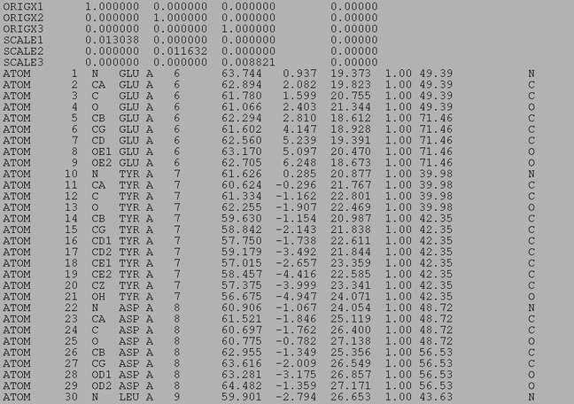
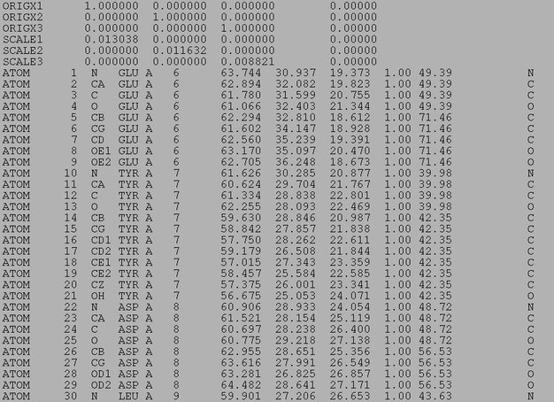

| .OPERATION: | PDB SH | ; Shift coordinates in PDB file |
| .PDB INPUT FILE: | sav_efg_vol.pdb | ; PDB file name (input) |
| .PDB OUTPUT FILE: | pdbsh.pdb | ; PDB file name (output) |
| .X, Y, & Z SHIFT IN ANGSTROMS: | 30 0 0 | ; Shifts |
| PDB INPUT FILE (PORTION) |
|---|
|  |
| sav_efg_vol.pdb |
| PDB OUTPUT FILE (PORTION) |
|---|
|  |
| pdbsh.pdb |